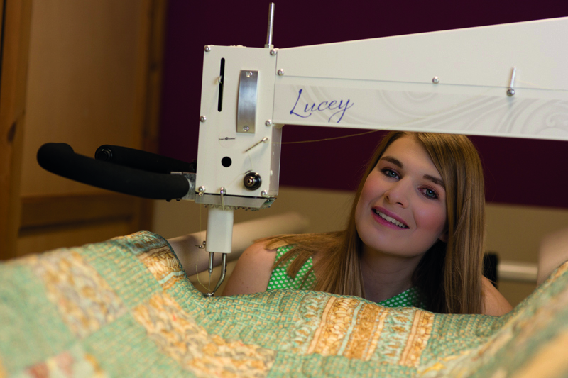

Theresa is the owner of Trixi. Her dream was to get a dog someday. She decided to get a dog in 2020. On her birthday November 24th she got a call from the breeder. The puppies were born. Now the name challenge was on. Since they were born on the same day, she decided to find a name, which also starts with an T.
To find the right name, was not easy, but in the end she decided to go with Trixi - short, easy to shout and no similarity to commands.
Theresa has another passion: patchwork/quilting. All about that you will find through the link in the image above.